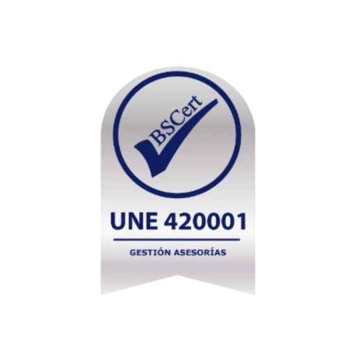

Asesores Jurídicos
Abogados experimentados están a tu disposición para ayudarte en tu caso. Para más información pulsa en el título.
JAP & ASOCIADOS, nº1 en fiscalidad para traders en EspañaMás info
En situaciones críticas te ofrecemos
Nuestro equipo te ofrece su experiencia y preparación para ayudarte en el día a día de tu casa y tu negocio

Elige tu perfil
Asesoramos a empresas y particulares. Dinos quién eres y te enseñamos por dónde empezar.
Declaraciones impecables, criterio técnico y estrategia. Cuentas fondeadas, derivados, CFDs y criptoactivos.
Planes desde 190 €
Fiscalidad para tradersEstrategias empresariales para el día a día de tu negocio. Todos nuestros departamentos están para ayudarte.
Planes desde 30 €/mes
Asesoría de empresas y autónomosFiscal, laboral, contable y financiero, con asesoría jurídica mercantil, seguros y gestión de patrimonio para tu empresa.
Planes desde 30 €/mes
Asesoría de empresasProfesionales independientes gestionan comunidades, instalaciones deportivas, etc. Gestión eficaz y tecnológicamente avanzada.
Desde 50 €/mes
Administración de fincasLa guía definitiva de incompatibilidades: herramienta con IA para funcionarios bajo la Ley 53/1984. Diagnóstico gratuito.
Informe desde 49 €
Qué es y cómo usar CompatibleSíEn JAP y Asociados, su confianza es nuestro activo más valioso. Por ello, nos enorgullece contar con la certificación UNE 420001, el estándar de calidad más exigente y específico para el sector de las asesorías en España.
¿Qué significa esto para usted? Este sello avala que nuestro despacho no solo cumple con la ley, sino que opera bajo procesos auditados de máxima transparencia, seguridad en la gestión de datos y rigor técnico. Mientras otras asesorías simplemente gestionan, en JAP y Asociados garantizamos un servicio excelente, minimizando riesgos y asegurando que su negocio esté siempre en las mejores manos.
Elegirnos es elegir seguridad. Es elegir JAP y Asociados.
Decálogo de calidad
Abogados experimentados están a tu disposición para ayudarte en tu caso. Para más información pulsa en el título.
Fiscal, Laboral, Contable y Financiero. Estrategias empresariales. Para más información pulsa en el título.
Gestionamos con rigor tu patrimonio financiero e inmobiliario. Para más información pulsa en el título.
Nos encargamos de potenciar tu negocio en el mundo digital. Incrementando tu flujo de clientes. Para más información pulsa en el título.
Expertos en realizar informes y dictámenes periciales complejos en cualquier especialidad, con máximo rigor técnico legal. Para más información pulsa en el título.
Profesionales independientes gestionan comunidades, instalaciones deportivas, etc. Para más información pulsa en el título.
Agentes de seguros exclusivos. Velamos por que disfrutéis de las mejores coberturas. Para más información pulsa en el título.
JAP & ASOCIADOS dona parte de sus beneficios. Para más información pulsa en el título.
Calculadoras
Seis calculadoras y un simulador fiscal de trading. Gratis, y sin registro para usarlas.
Simulador de trading con impacto fiscal
Compromiso total con todos nuestros clientes
Ponemos todos los recursos disponibles para hacer nuestra labor con un nivel de exigencia máximo, para que todos nuestros clientes estén satisfechos de haber contratado a los profesionales que necesitaba para su caso.
Nuestros objetivos
Hacemos todo lo posible para implementar sus ideas en el proyecto para que sea exitoso y rentable.
ObjetivosGracias a nuestros modernos sistemas de trabajo, estamos consiguiendo una mayor respuesta a los problemas cotidianos de las personas, ayudándoles en su día a día a tomar decisiones lógicas, razonables y sensatas.
Estamos evitando muchos errores en las decisiones diarias, que seguro se hubieran producido sin un buen asesoramiento profesional.
El equipo

CEO fundador
Perito judicial · Asesor empresarial y financiero · Administrador de fincas · Inspector de viviendas

Abogada
Mediadora de conflictos

Abogada
Mediadora de conflictos
Lee más opiniones"Me trataron como si fuera de la familia. ¡Les daría 100 estrellas!"
Ayudar a la gente a ser un poquito más felices.
Fernando Sánchez - CEO Fundador
Contáctanos
Cuéntanos tu caso y te decimos cómo podemos ayudarte. Sin compromiso.
Certificación UNE 420001:2024Certificado nº 100736 · vigente hasta el 27 de noviembre de 2026